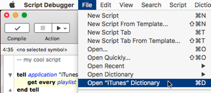

|
Current Context |
|
If you’re editing a script that contains a tell block targeting an application, you can quickly open that application’s dictionary window.
- Select anywhere inside the
tellblock targeting the application whose dictionary you want to open. (This is to put your selection into the desired tell context.) Then choose File > Open XXX Dictionary, where “XXX” will be the name of the application. (The command-key shortcut, Command-D by default, will come in very handy here, and will rapidly become second nature.)

- Alternatively, choose Open XXX Dictionary from the contextual menu.
If you’re editing a script that targets a library script with a dictionary, you can quickly open that script’s dictionary window.
- Select in a line containing the expression
script "XXX", where “XXX” is the library script’s name. Then choose File > Open Script Library “XXX”. A dialog appears, letting you open the script’s dictionary or the script itself. (Again, the default keyboard shortcut is Command-D.)